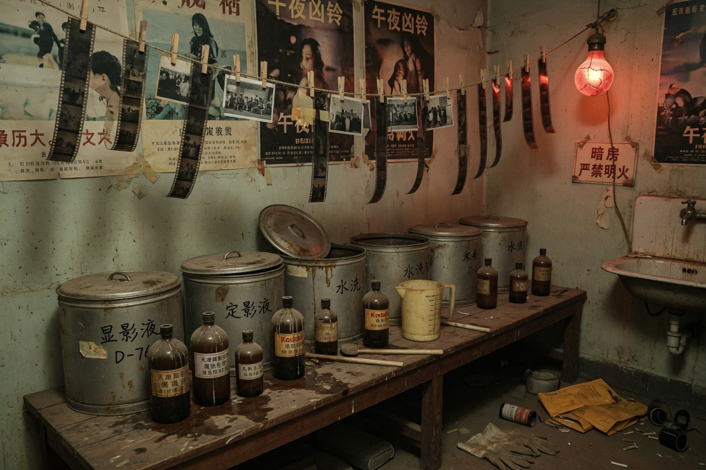

显影罐
晾片绳

药液见过血，也见过名字。血是机房起火那年烫出来的。名字是后来泡进去的。
洗片间从里面反锁过。反锁的人不是为了自杀。是为了不让字幕提前结束。字幕提前结束，座位上的手续作废。
本页不是主线唯一解。它解释为什么环境页说门从里面反锁。反锁是手续，不是彩蛋。
显影罐的盖子用铁丝捆着。捆着是怕人打开闻。闻过的人说是醋酸。醋酸掩盖不了烫过的气味。烫过的气味来自二零零八年。二零零八年以后，药液里开始泡纸片。纸片上是座号。座号泡久了，字会浮起来。浮起来的字像人名。人名不该出现在洗片间。出现了，就说明加映已经把化学和手续搅在一起。
晾片绳上现在没有片。没有片仍挂着夹子。夹子像等什么回来。回来的不会是拷贝。拷贝在仓里。仓里的无名本对着14-7。14-7对着铁盒。铁盒对着你。你若是已经看见票根，洗片间只是把化学气味补上。补上不等于新的门。门还是那些专名。